M.Eng. Thesis · Harbin Engineering University · 2018 to 2021
Battery powered underwater acoustic modems spend much of their energy in the transmit power amplifier, and OFDM makes that amplifier inefficient: its peaks sit about 11 dB above the average power, so the amplifier has to run far below saturation. My M.Eng. thesis attacked the problem from both ends of the link. At the transmitter I reduced the peak-to-average power ratio (PAPR) with repeated clipping and filtering and a rooting companding transform, alongside the selected mapping and partial transmit sequence methods from my published papers. At the receiver I trained a small neural network to learn the power amplifier and removed its distortion by frequentative decision feedback (FFB). Every result on this page comes from the open implementation of this work, and the lab runs the same engine live in your browser.
Underwater sensor networks watch the ocean for months at a time on battery power: moored oceanographic sensors, seabed stations, autonomous vehicles and gliders, environmental monitors and subsea oil and gas equipment. Radio fades within metres in seawater, so these systems talk with sound, and the power amplifier that drives the transmitting transducer is one of the largest energy costs in the modem. Every decibel it wastes shortens how long a deployment can last.
OFDM is the modulation of choice for high rate underwater links because it turns a long, frequency selective multipath channel into hundreds of narrow subcarriers that are each easy to equalise. Its weakness is the peak-to-average power ratio: the inverse FFT adds hundreds of subcarriers together, and now and then they line up into a peak far above the average. The amplifier must stay linear at those peaks, so it spends most of its time backed off, where it is inefficient. An ideal class B amplifier averages 78.5% efficiency at full drive but only about 22.3% when backed off by the 10.92 dB an OFDM signal needs.
My goal was a low complexity, energy efficient OFDM system for battery powered underwater modems, and I worked on both ends of the link:
Clip every peak above a threshold, filter the regrowth out of the band, repeat. I studied how the clipping ratio, oversampling factor and pilot layout trade PAPR against bit error rate for underwater acoustic OFDM.
10.97 to 5.39 dB in four passesA power law compander |x|R that keeps the phase, with exponents from 0.1 to 0.9 and the inverse applied at the receiver.
R = 0.5: 10.84 to 6.03 dBDistortionless methods from my published papers: transmit the best of several phase rotated copies of each symbol and send a few bits of side information.
SLM, 16 candidates: 11.15 to 8.03 dBA 6-12-6 network learns the power amplifier from measured samples, and frequentative decision feedback uses it to estimate and subtract the amplifier's distortion.
48x fewer bit errors at 3 dB back-offThe Transmitter view generates random OFDM symbols and applies the method you pick; the PAPR distribution, amplifier efficiency, distortion and spectrum update as symbols accumulate. The Receiver view runs the whole link, amplifier, channel, noise and FFB, with the neural network weights trained in Python. The Channel view shows the BELLHOP multipath and the guard interval it calls for.
An OFDM symbol is the inverse FFT of N data symbols Xk. When N is large, the time samples behave like complex Gaussian noise, so their power follows an exponential distribution and a few samples are much stronger than the rest. The PAPR of one symbol is its peak sample power over its mean power, and because it changes from symbol to symbol it is reported as a complementary cumulative distribution function (CCDF), Pr[PAPR > z]. Every PAPR on this page is read at CCDF 10-3: the level exceeded by one symbol in a thousand.
The closed form treats the N Nyquist rate samples as independent. The transmitted analogue signal peaks between those samples, so PAPR has to be measured on an oversampled signal: I zero pad the middle of the spectrum by a factor I before the IFFT, with I = 4 whenever accurate peaks matter.
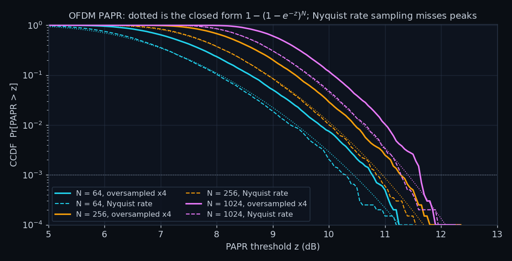
Why the peaks matter for energy: an amplifier backed off by the PAPR so that its peaks just reach saturation averages about (π/4)·10−PAPR/20 efficiency if it is an ideal class B stage, and 0.5·10−PAPR/10 for class A. Real amplifiers do worse, but the scaling holds: every decibel of PAPR removed lets the same battery radiate the same power for longer. I use the class B rule as a simple, comparable figure of merit throughout.
Clipping is the simplest way to remove peaks: every sample above a threshold is scaled down to it with its phase kept. I set the threshold through the clipping ratio CR, the clipping power over the mean power of the symbol, so the amplitude limit is √(CR·E|x|2). Clipping alone throws energy outside the band, so repeated clipping and filtering (RCF) follows every clip with a frequency domain filter: FFT, zero the out-of-band bins, inverse FFT. The filter lets a few peaks grow back, so the clip and filter pair is repeated, four times here. Armstrong introduced the idea for radio OFDM [1]; my thesis applied it to underwater acoustic OFDM and mapped its tradeoffs.
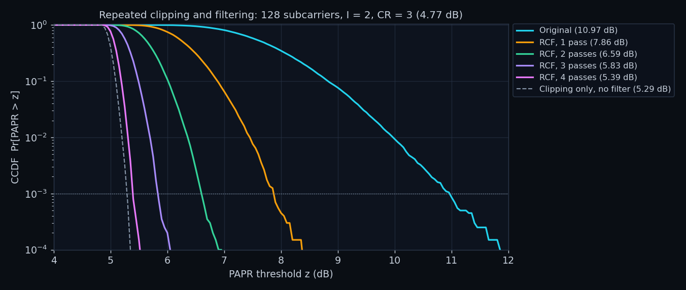
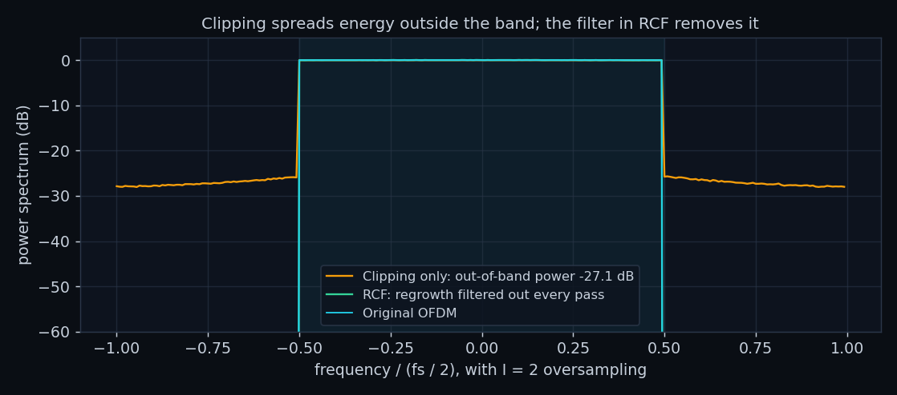
The cost of RCF is in-band distortion: the clipped energy that stays inside the band adds a noise like error to every subcarrier, 20.0 dB below the signal for this setting. I measure the price as the extra SNR a QPSK link needs to reach a bit error rate of 10-4 in white noise; without clipping that SNR is 11.41 dB. Because the added error is fixed once the data are known, the bit error rate is computed exactly from each bit's noiseless decision margin rather than by counting errors, which removes Monte Carlo noise from the table.
| Oversampling I | CR (dB) | PAPR at 10-3 (dB) | In-band SDR (dB) | SNR for BER 10-4 (dB) | SNR cost (dB) |
|---|---|---|---|---|---|
| 1 | 4 (6.02) | 6.02 | 27.3 | 11.54 | 0.14 |
| 1 | 3 (4.77) | 4.79 | 21.7 | 11.92 | 0.51 |
| 1 | 2 (3.01) | 3.12 | 15.4 | 13.99 | 2.58 |
| 1 | 1.75 (2.43) | 2.62 | 13.6 | 15.91 | 4.50 |
| 1 | 1.5 (1.76) | 2.09 | 11.8 | 22.73 | 11.32 |
| 2 | 4 (6.02) | 6.46 | 25.3 | 11.62 | 0.22 |
| 2 | 3 (4.77) | 5.41 | 20.0 | 12.17 | 0.76 |
| 2 | 2 (3.01) | 4.16 | 14.2 | 14.92 | 3.52 |
| 2 | 1.75 (2.43) | 3.86 | 12.8 | 17.52 | 6.11 |
| 2 | 1.5 (1.76) | 3.58 | 11.2 | floor above 10-4 | ∞ |
| 4 | 4 (6.02) | 6.87 | 25.3 | 11.62 | 0.22 |
| 4 | 3 (4.77) | 5.80 | 20.0 | 12.17 | 0.76 |
| 4 | 2 (3.01) | 4.48 | 14.3 | 14.88 | 3.47 |
| 4 | 1.75 (2.43) | 4.11 | 12.8 | 17.45 | 6.04 |
| 4 | 1.5 (1.76) | 3.73 | 11.3 | floor above 10-4 | ∞ |
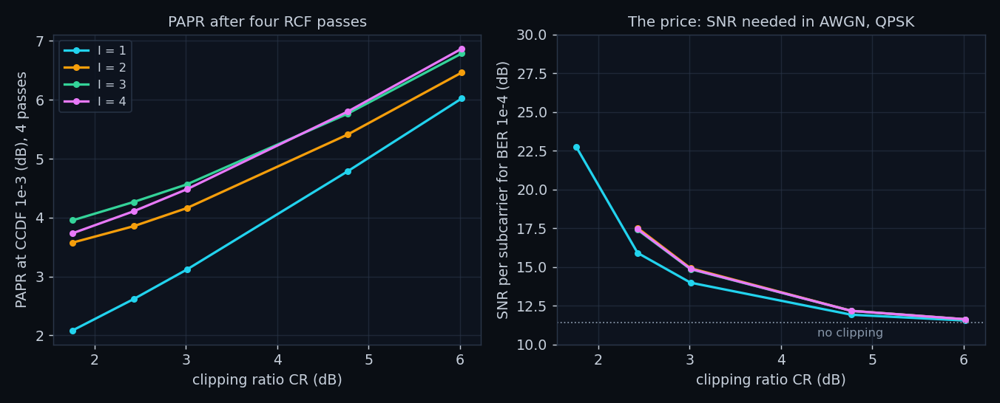
Companding compresses large amplitudes instead of cutting them. My rooting companding transform raises each sample's amplitude to a power R below one and keeps its phase, f(x) = |x|R·x/|x|, where R = 0.5 is square root companding and I explored R from 0.1 to 0.9. The receiver restores the amplitudes with |y|1/R before its FFT. Because the peak amplitude is raised to the same power, the PAPR in dB shrinks roughly in proportion to R.
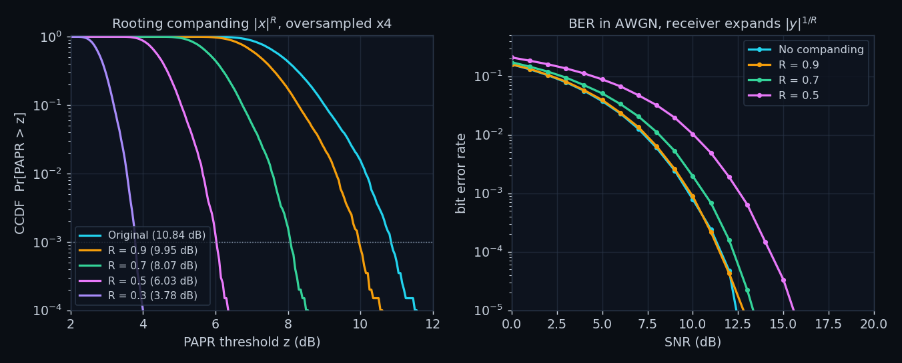
Distortion based methods change the signal; SLM and PTS only choose among equivalent versions of it. SLM multiplies the data by U different phase sequences drawn from {±1, ±j}, computes U inverse FFTs and transmits the candidate with the lowest PAPR, sending log2U bits of side information so the receiver can undo the rotation [12]. PTS splits the subcarriers into V adjacent blocks, computes one inverse FFT per block, and searches the WV−1 combinations of block phase factors for the lowest peak, costing (V−1)·log2W side information bits [13, 14]. Neither adds distortion; both spend computation and a little rate.
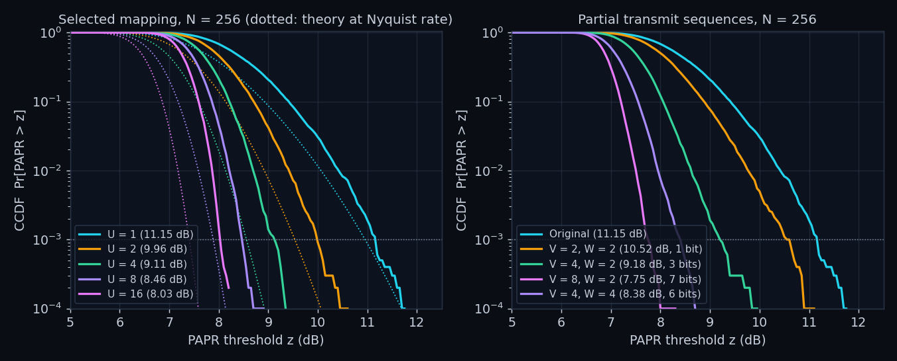
| Method | PAPR at 10-3 (dB) | In-band SDR (dB) | Out-of-band power (dB) | Side information (bits) | FFT work per symbol | Class B efficiency |
|---|---|---|---|---|---|---|
| Original OFDM | 10.92 | none | none | 0 | 1 | 22.3% (1.00x) |
| Clipping only (CR 3) | 5.29 | 25.0 | -27.0 | 0 | 1 | 42.7% (1.91x) |
| RCF (CR 3, 4 passes) | 5.82 | 20.0 | none | 0 | 9 | 40.2% (1.80x) |
| Rooting companding (R 0.5) | 6.06 | 15.4 | -17.2 | 0 | 1 | 39.1% (1.75x) |
| SLM (U 16) | 7.55 | none | none | 4 | 16 | 32.9% (1.47x) |
| PTS (V 8, W 2) | 7.26 | none | none | 7 | 8 | 34.1% (1.53x) |
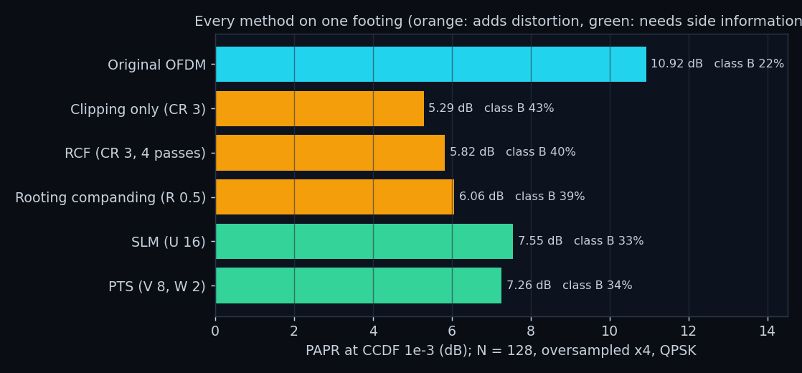
The table is the design space in one view. Clipping and RCF remove the most PAPR for the least computation but add distortion; rooting companding is cheap but spreads the spectrum; SLM and PTS are clean but need side information and several inverse FFTs per symbol. A battery powered modem that can afford a little distortion gets the most from RCF, and that distortion is exactly what the receiver side of my thesis removes.
Transmitter methods reduce the peaks, but a real amplifier still compresses whatever peaks remain, and the cheaper and more efficient the amplifier, the harder it compresses. My idea was to leave the amplifier alone and clean up its distortion at the receiver, where computation is less constrained than in a battery powered transmitter.
I model the transmit amplifier as a solid state power amplifier (Rapp model, smoothness p = 2), which compresses amplitude and leaves phase alone. Its drive is set by the input back-off, how far the saturation level sits above the RMS input amplitude, and I evaluate 3, 5 and 7 dB. By Bussgang's theorem the output is a scaled copy of the input plus a distortion term uncorrelated with it, y = αx + d, and that distortion d is what the receiver has to remove.
The receiver does not know the amplifier's equations, so it learns them. The time signal's amplitudes are reshaped into vectors of six consecutive samples, one hidden layer of 12 sigmoid neurons maps them to six output amplitudes (162 weights in total), and the network is trained with the Levenberg-Marquardt algorithm [9] on 25,800 amplifier samples measured at 35 dB SNR, split randomly 70/15/15 with validation based early stopping.
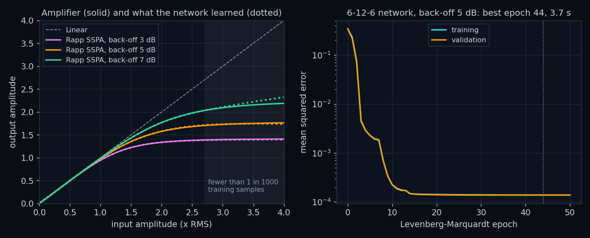
The channel is a BELLHOP ray tracing model of the chapter 4 link: 100 m of water, the transmitter at 30 m and the hydrophone at 50 m, 2 km apart, at 11 kHz, with the sound speed rising from 1482 m/s at the surface to 1498.4 m/s at 50 m over a sandy bottom. The arrivals are read with the parser I validated in my BELLHOP report.
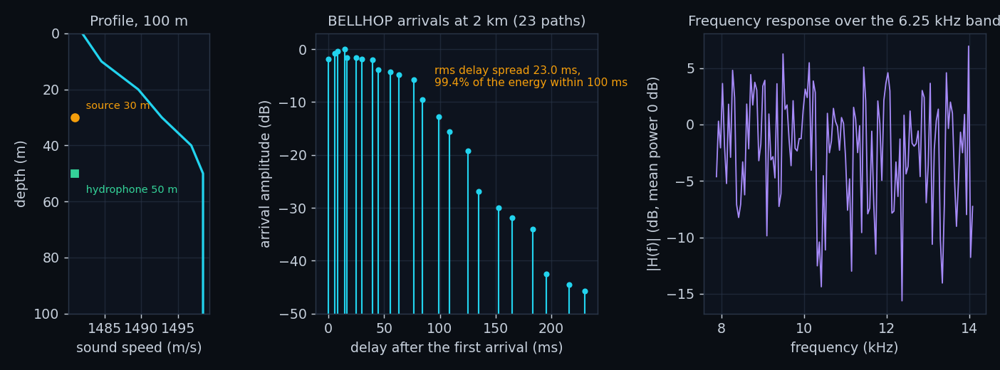
The received subcarriers are Yk = Hk(αXk + Dk) + Wk, where Dk is the FFT of the amplifier distortion. D depends on the whole transmitted symbol, so the receiver cannot compute it until it knows the symbol, and it cannot know the symbol reliably until D is removed. FFB breaks the circle by iterating, the approach Tellado, Hoo and Cioffi [7] and Chen and Haimovich [8] took for known clipping; my contribution was to let a learned model stand in for the amplifier, so the receiver never needs the amplifier's equations:
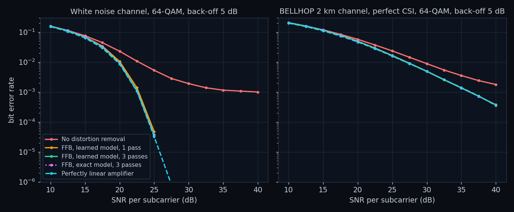
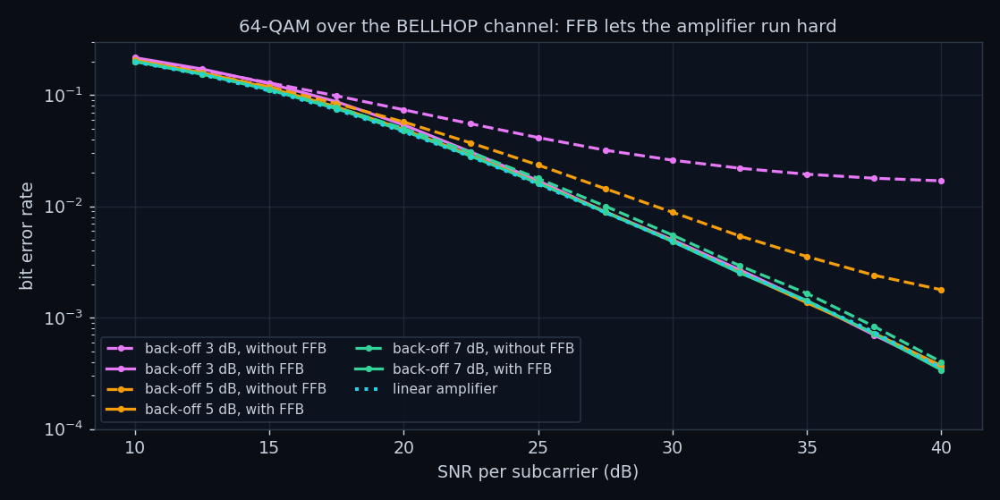
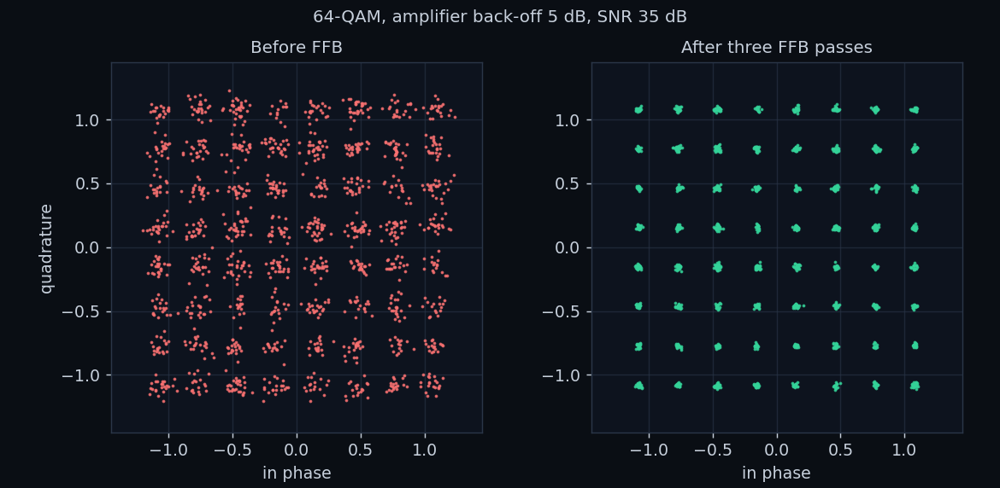
Over the BELLHOP channel FFB recovers linear amplifier performance and no more: what remains is set by the subcarriers sitting in deep fades, which only channel coding or diversity can fix. That is the natural limit of receiver side distortion removal, and it is why the white noise and channel results are shown side by side.
Moored and seabed networks that report temperature, currents, acoustics or water quality for months. Energy per bit sets how long a deployment lasts, and lower PAPR plus receiver side cleanup lets the same battery carry more data.
AUV and glider telemetry and command links, where every watt spent on the acoustic modem is a watt not spent on propulsion or sensing.
Wireless monitoring of subsea oil and gas equipment, pipelines and offshore wind foundations, where cables are expensive and divers are dangerous.
Tsunami and seabed pressure buoys, harbour and coastal surveillance, and naval sensor networks that must run unattended.
The same peak problem shapes 4G and 5G (it is why the LTE uplink uses single carrier FDMA), Wi-Fi, digital television and satellite links; clipping and filtering and neural network amplifier models are standard tools there.
A long short-term memory network for PAPR reduction in underwater OFDM (JASA 2021 [16], KSII Transactions 2023 [17]), and co-authored deep learning OFDM receivers [18, 19].
This work is open source at github.com/raza-waleed/underwater-acoustic-ofdm-papr-reduction: a numpy package for the OFDM model, the PAPR methods, the amplifier, the BELLHOP channel, the neural network and the FFB receiver, together with the experiment and figure scripts, the browser lab and the tests.
pip install -r requirements.txt python experiments/run_all.py # every experiment, about 5 minutes python experiments/make_figures.py # the figures python build.py # this page python -m unittest discover -s testsBrowse the repository DOI 10.5281/zenodo.22949942
State the measurement with the number. A PAPR means little without its CCDF level and sampling rate, and an SNR means little without saying where it was measured; every number on this page carries both.
Distortion moves; it does not vanish. Clipping trades peaks for in-band error and spectrum, RCF trades the spectrum back for computation, rooting companding trades peaks for noise enhancement, and SLM and PTS trade them for side information. The useful question is always which resource the system can spare.
A receiver can clean up the amplifier, not the ocean. FFB with a 162 weight network matches a linear amplifier, which means the transmitter can run its amplifier much harder; beyond that point the fading channel sets the error rate, and the next gains come from coding and diversity.
Size the waveform from the channel. The BELLHOP channel spreads its energy over tens of milliseconds, which sets the guard interval and the symbol length, the same lesson my lake trial report drew from its measured coherence time.